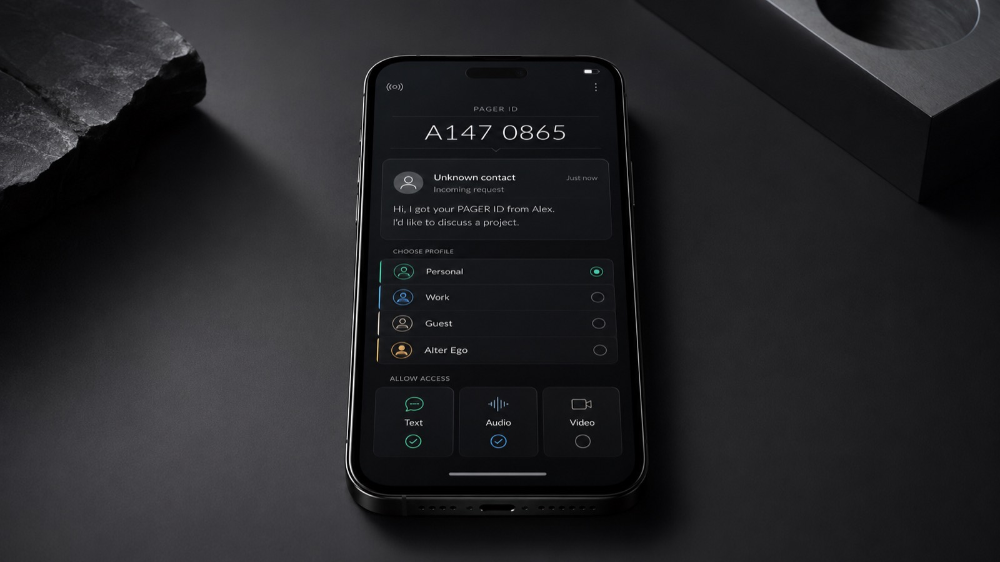
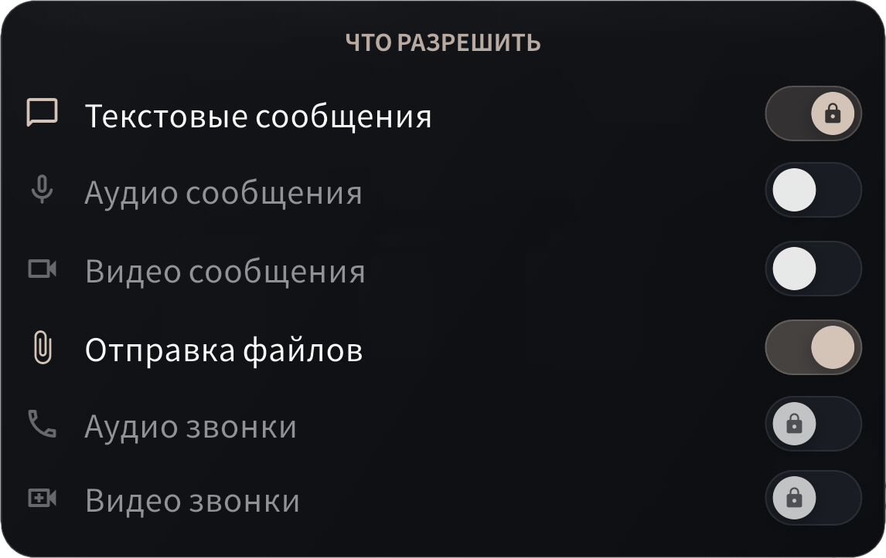

Приватное общение
начинается с границ
PAGER создан чтобы их сохранять.
Я остаюсь собой, но открываюсь по-разному.
PAGER создан чтобы их сохранять.
Я остаюсь собой, но открываюсь по-разному.


Короткий идентификатор вместо номера телефона или сложного ника. Его достаточно, чтобы найти вас в приложении.

Короткий. Запоминающийся. Ваш. Premium PAGER ID может стать частью личной или профессиональной идентичности — и будущим слоем монетизации.
 Работа
РаботаВнутри одного аккаунта создаётся до четырёх профилей. Входящему контакту назначается профиль — и человек видит именно его имя, фотографию и описание.
В обычном мессенджере разные части жизни сходятся в одной точке: одно имя, одна фотография, одно описание — для всех.
Это коллапс контекста: личные, рабочие и случайные контакты оказываются внутри одного публичного образа.
 01Я остаюсь собой
01Я остаюсь собой
 02Но открываюсь по-разному
02Но открываюсь по-разному
 03У каждого своя открытость
03У каждого своя открытость
 04Управление границами
04Управление границами
Профили общения продолжают мультипрофиль: контакты сортируются по фильтрам, и каждый фильтр настраивается индивидуально.

Уже в приложенииКурьер, арендодатель, покупатель, служба поддержки должны иметь возможность связаться. Это не значит, что контакт должен сохраняться навсегда.
Гостевой профиль открывает только необходимое и автоматически завершает связь после установленного срока.
Доставка · Аренда · Объявления · Поддержка · Разовые услуги

Стабильная private beta с завершённым пользовательским опытом, проверенная на первых когортах.
Сначала пользовательская ценность и B2C → затем корпоративная инфраструктура
Мультипрофиль, профили общения, запросы и временные контакты — построены и работают.
Раунд позволит завершить ключевые механики, стабилизировать приложение и проверить PAGER на первых пользовательских когортах.
Работающая private beta с подтверждённым использованием ключевых механик PAGER.
Основатель с опытом в предпринимательстве, цифровых продуктах и сценарных механиках. Проект развивается не как абстрактная идея, а как работающий MVP с определённой продуктовой системой и планом выхода в beta.